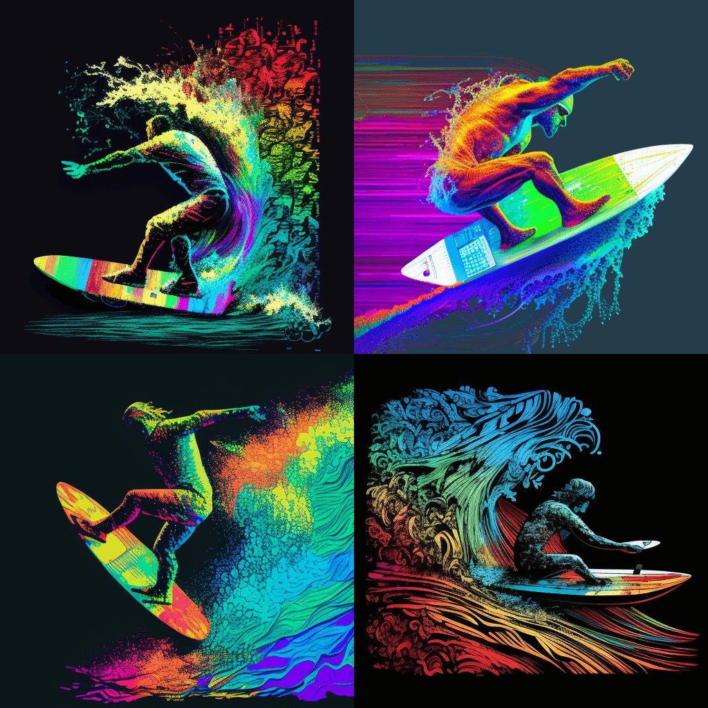

This library will have you hanging ten in no time and coding like a pro surfer.
Here at surfscript.js, we understand that surfing is more than just a sport, it's a lifestyle. So, we've created a library that embodies the surfer spirit, complete with gnarly board types and killer moves.
We know what you're thinking: "Another JavaScript library? Oh, great, just what the world needs."
But we promise, surfscript.js is different. While other libraries are busy reinventing the wheel, we're busy reinventing the surfboard. Our library is jam-packed with features that will have you feeling like you're out on the waves, even if you're stuck behind a computer screen.
We've taken all the best parts of surfing and combined them with the power of JavaScript.
So what can you do with surfscript.js? Well, for starters, you can create surfers with different skill levels, board types, and catch waves on different boards. You can also add and remove board types and increase or decrease skill levels. And the best part? You can do it all with a few lines of code.
But don't just take our word for it.
Check out some of these totally real and not at all made-up testimonials: